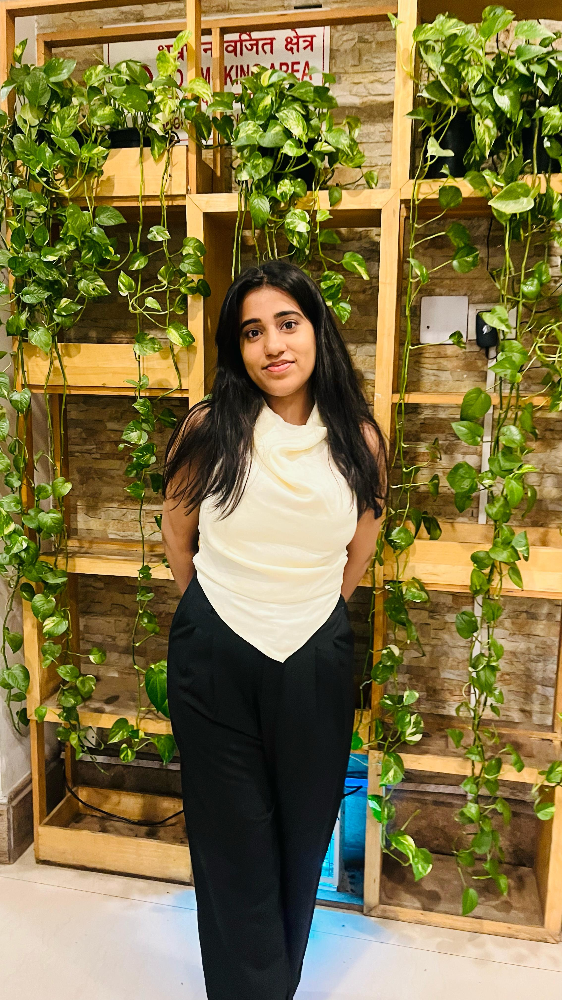

Aspiring Website Designer | HTML | CSS
I am a passionate and detail-oriented aspiring website designer, currently learning and building projects using HTML and CSS. I enjoy creating clean and user-friendly designs that are responsive and accessible. I enjoy working on projects that challenge my creativity while ensuring that the user experience remains intuitive. I believe in clean, simple, and responsive designs that provide users with seamless interaction. Whether it’s designing from scratch or improving existing web layouts, I always aim to blend functionality with aesthetic appeal.
A simple personal portfolio created using HTML and CSS. Includes About, Projects, and Contact sections.
View ProjectRecreated the landing page of a famous OTT platform as a practice exercise to improve layout and responsiveness.
View ProjectEmail: vridhikakkar08@gmail.com
LinkedIn: https://www.linkedin.com/in/vridhi-kakkar-87496b263/
GitHub: https://github.com/vridhi4650